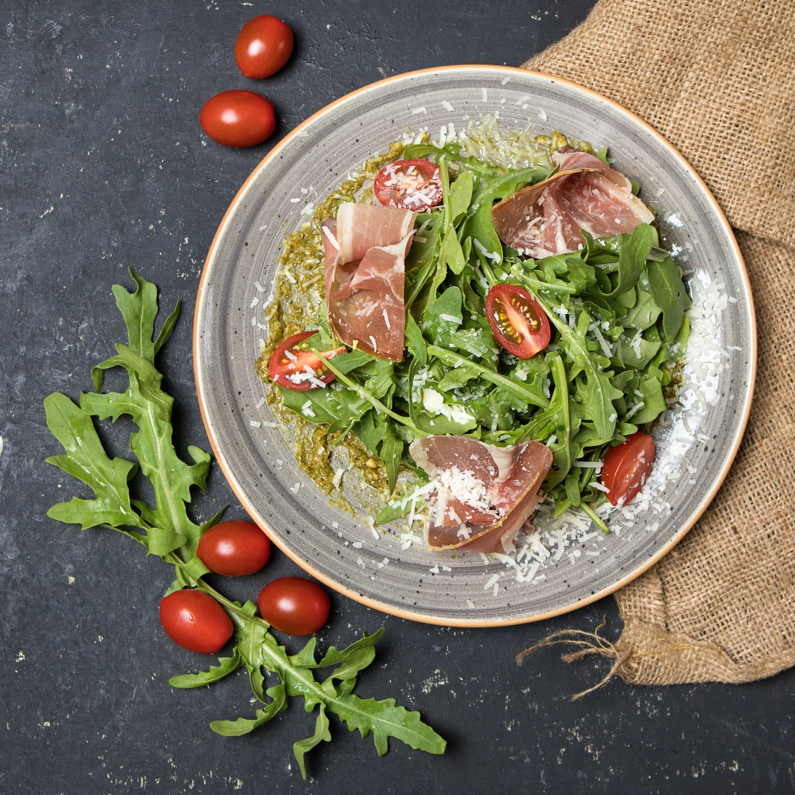

INFO
山の中にひっそり佇む隠れ家レストラン
駅からはちょっぴり遠いですが、、、
たまには遠回りしてみませんか？
Access
Capybaland Mt.sunny 1-2-3 in Capyzou farm
「サニー山駅」から車で10分
[OPEN]10:00-22:00 [CLOSE]Monday
Garelly




駅からはちょっぴり遠いですが、、、
たまには遠回りしてみませんか？
Capybaland Mt.sunny 1-2-3 in Capyzou farm
「サニー山駅」から車で10分
[OPEN]10:00-22:00 [CLOSE]Monday